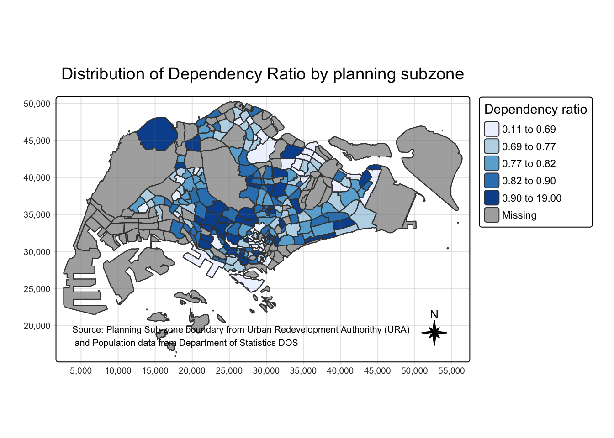

pacman::p_load(sf, tmap, tidyverse)In-class_Ex08
mpsz <- st_read(dsn = "/Users/geloliu/Gelo-608/ISSS608/Hands-on Exercises/Hands-on Ex 08/data/MasterPlan2014SubzoneBoundaryWebSHP",
layer = "MP14_SUBZONE_WEB_PL")Reading layer `MP14_SUBZONE_WEB_PL' from data source
`/Users/geloliu/Gelo-608/ISSS608/Hands-on Exercises/Hands-on Ex 08/data/MasterPlan2014SubzoneBoundaryWebSHP'
using driver `ESRI Shapefile'
Simple feature collection with 323 features and 15 fields
Geometry type: MULTIPOLYGON
Dimension: XY
Bounding box: xmin: 2667.538 ymin: 15748.72 xmax: 56396.44 ymax: 50256.33
Projected CRS: SVY21popdata <- read_csv("/Users/geloliu/Gelo-608/ISSS608/Hands-on Exercises/Hands-on Ex 08/data/respopagesextod2011to2020/respopagesextod2011to2020.csv")Rows: 984656 Columns: 7
── Column specification ────────────────────────────────────────────────────────
Delimiter: ","
chr (5): PA, SZ, AG, Sex, TOD
dbl (2): Pop, Time
ℹ Use `spec()` to retrieve the full column specification for this data.
ℹ Specify the column types or set `show_col_types = FALSE` to quiet this message.popdata2020 <- popdata %>%
filter(Time == 2020) %>%
group_by(PA, SZ, AG) %>%
summarise(`POP` = sum(`Pop`)) %>%
ungroup() %>%
pivot_wider(names_from=AG,
values_from=POP) %>%
mutate(YOUNG = rowSums(.[3:6])
+rowSums(.[12])) %>%
mutate(`ECONOMY ACTIVE` = rowSums(.[7:11])+
rowSums(.[13:15]))%>%
mutate(`AGED`=rowSums(.[16:21])) %>%
mutate(`TOTAL`=rowSums(.[3:21])) %>%
mutate(`DEPENDENCY` = (`YOUNG` + `AGED`)
/`ECONOMY ACTIVE`) %>%
select(`PA`, `SZ`, `YOUNG`,
`ECONOMY ACTIVE`, `AGED`,
`TOTAL`, `DEPENDENCY`)`summarise()` has grouped output by 'PA', 'SZ'. You can override using the
`.groups` argument.popdata2020 <- popdata2020 %>%
mutate_at(vars(PA, SZ), list(~ toupper(.))) %>%
filter(`ECONOMY ACTIVE` > 0)mpsz_pop2020 <- left_join(mpsz, popdata2020,
by = c("SUBZONE_N" = "SZ"))tm_shape(mpsz_pop2020)+
tm_polygons(fill = "DEPENDENCY",
fill.scale = tm_scale_intervals(
style = "quantile",
n = 5,
values = "brewer.blues"),
fill.legend = tm_legend(
title = "Dependency ratio")) +
tm_title("Distribution of Dependency Ratio by planning subzone") +
tm_layout(frame = TRUE) +
tm_borders(fill_alpha = 0.5) +
tm_compass(type="8star", size = 2) +
tm_grid(alpha =0.2) +
tm_credits("Source: Planning Sub-zone boundary from Urban Redevelopment Authorithy (URA)\n and Population data from Department of Statistics DOS",
position = c("left", "bottom"))[plot mode] fit legend/component: Some legend items or map compoments do not
fit well, and are therefore rescaled.
ℹ Set the tmap option `component.autoscale = FALSE` to disable rescaling.